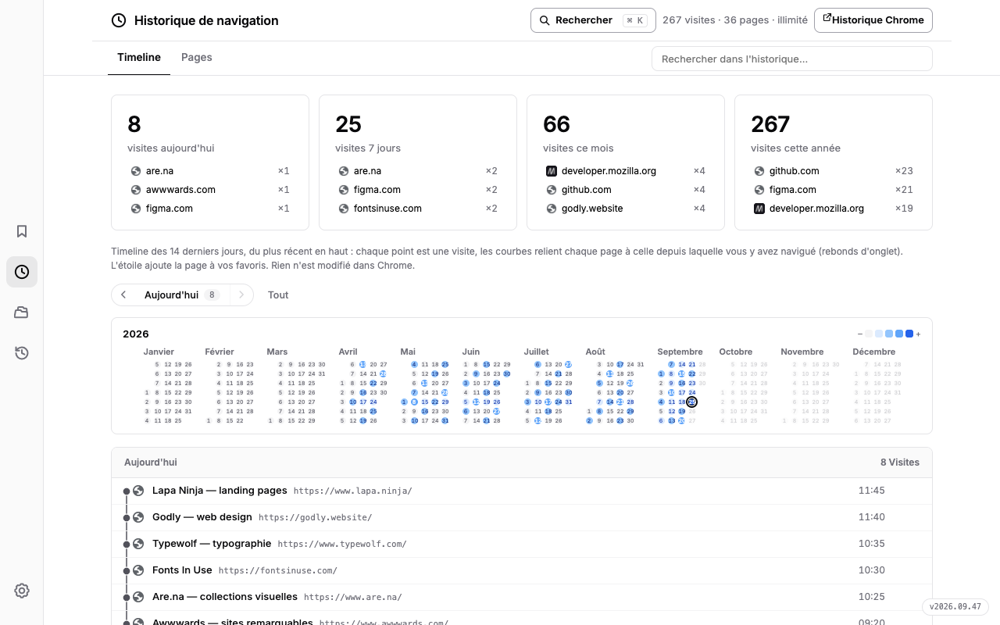
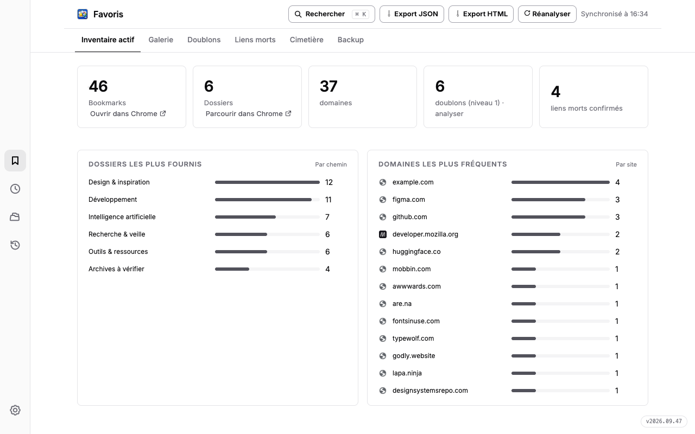
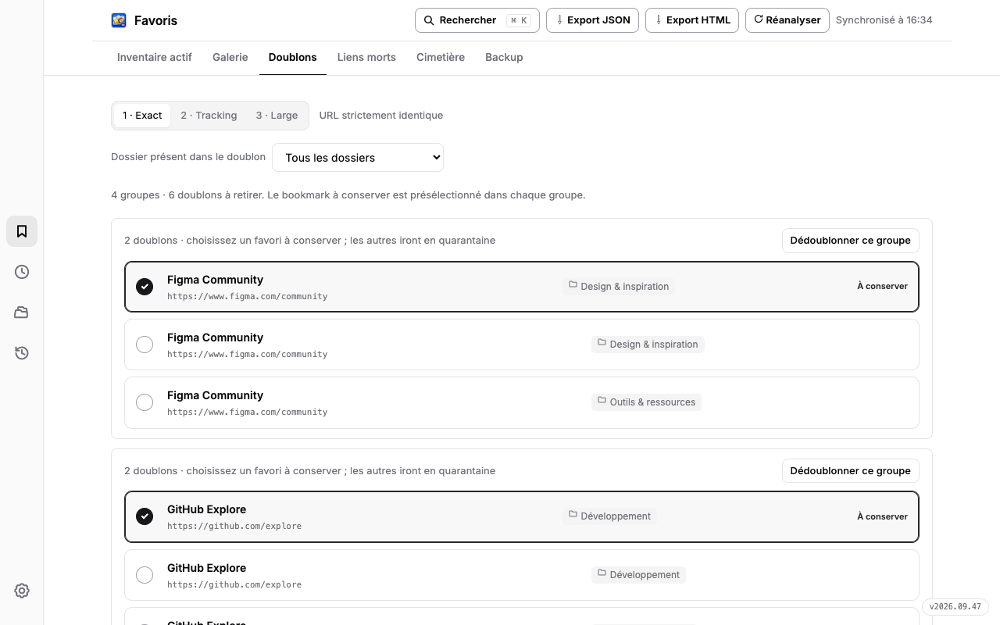
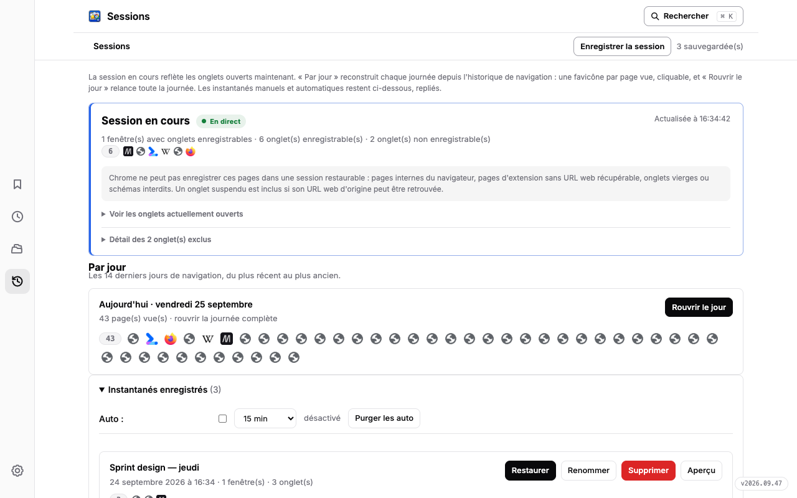

Trois façons de repérer les doublons
Adresse exacte, paramètres de suivi ignorés, puis variantes de protocole ou de domaine.
L’ATLAS DE VOTRE NAVIGATEUR
Des milliers de favoris, des visites qui s’enchaînent, des onglets qu’on veut garder. Favoris réunit tout dans une vue claire pour retrouver l’essentiel, nettoyer et reprendre votre navigation par jour.

Parcourez les jours et retrouvez le chemin d’une page à l’autre.
Capture de l’extension avec des données fictives. Choisissez une vue ci-dessus.
Favoris relie trois morceaux de votre navigation : les favoris conservés, les pages visitées et les onglets ouverts maintenant.
La recherche globale, les vues par jour et les instantanés de session aident à retrouver, comprendre, puis sauvegarder ce qui compte.
Commencez par l’inventaire : vos dossiers, domaines et favoris apparaissent dans une vue lisible. Passez à la galerie pour retrouver les sites par leurs miniatures, avec recherche et filtres.

Les doublons se vérifient à trois niveaux. Le contrôle des liens morts ne retient que les réponses 404 et 410 confirmées ; les erreurs temporaires restent à vérifier. Les éléments mis de côté passent par une quarantaine restaurable.

Adresse exacte, paramètres de suivi ignorés, puis variantes de protocole ou de domaine.
Une panne réseau passagère ne devient pas automatiquement un lien mort.
Retrouvez un favori écarté avant la purge prévue par l’extension.
Un calendrier pour choisir un jour. Une timeline pour suivre le trajet d’une page à l’autre. Une vue Pages pour relire les visites dans l’ordre avec une recherche immédiate.
La session en cours montre toutes les favicônes. Parcourez les pages vues jour par jour et rouvrez une journée complète, ou restaurez un instantané daté. L’enregistrement automatique reste disponible.

Voyez toutes les favicônes des onglets ouverts et le volume de la session.
Rouvrez les pages uniques retrouvées dans l’historique d’une journée.
Conservez des sessions datées, manuellement ou automatiquement.
Exportez vos favoris en JSON ou en HTML. Les actions de nettoyage et de restauration créent aussi des instantanés locaux, pour retrouver des favoris manquants sans effacer les ajouts plus récents.
Traités dans Chrome et stockés localement. L’éditeur ne reçoit pas de copie de vos données de navigation.
Les miniatures transmettent l’URL à WordPress.com mshots ; certains secours de favicônes utilisent Google S2 ; le scan contacte les sites vérifiés sans leurs cookies.
Les caches et instantanés sont supprimables depuis l’extension. La politique détaille les données, durées et permissions.
L’ATLAS EST PRÊT
Favoris est une extension Chrome gratuite, disponible en mode développeur depuis ce dépôt. La fiche Chrome Web Store sera ajoutée dès sa publication.
Les doublons et liens morts concernés passent d’abord par la quarantaine. Vous pouvez les restaurer. Les liens morts confirmés suivent ensuite la durée de conservation prévue par l’extension ; la purge des doublons est manuelle.
La carte « Session en cours » reflète les onglets ouverts. Le bouton « Enregistrer la session » crée une copie datée ; vous pouvez aussi activer les captures automatiques à l’intervalle choisi.
Oui. Pour produire les miniatures, l’adresse du site est transmise à mshots. Les captures récupérées sont ensuite conservées localement pendant 30 jours.